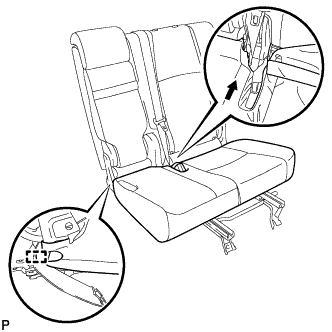
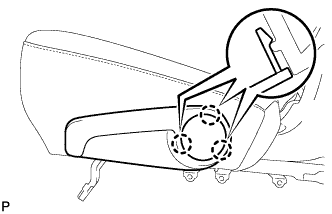

ЗАМОК РЕМНЯ БЕЗОПАСНОСТИ ЗАДНЕГО СИДЕНЬЯ № 1 В СБОРЕ (для моделей с раздельным сиденьем типа 60/40 с функцией облегчения посадки "Walk In" с левой стороны) > УСТАНОВКА |
| 1. УСТАНОВИТЕ ЗАМОК РЕМНЯ БЕЗОПАСНОСТИ ЛЕВОГО ЗАДНЕГО СИДЕНЬЯ № 1 В СБОРЕ |
 |
Установите замок ремня безопасности, подсоедините крепление 3-точечного ремня безопасности и закрепите его болтом.
| *a | Выступающая часть |
| 2. УСТАНОВИТЕ ОБИВКУ ПОДУШКИ СИДЕНЬЯ ВМЕСТЕ С ПОДУШКОЙ |
|  |
Введите в зацепление крюк.
 |
Подсоедините крепления, чтобы закрепить обивку подушки сиденья вместе с подушкой.
| 3. УСТАНОВИТЕ КРЫШКУ ЗАЩЕЛКИ ЗАМКА СПИНКИ ЛЕВОГО ЗАДНЕГО СИДЕНЬЯ |
Установите крышку и введите в зацепление 3 фиксатора.
| 4. УСТАНОВИТЕ МОЛДИНГ ПОДУШКИ ЛЕВОГО ЗАДНЕГО СИДЕНЬЯ |
 |
Переместите молдинг в направлении, указанном на рисунке стрелкой, чтобы ввести в зацепление направляющую.
Введите в зацепление 3 захвата и фиксатор, чтобы установить молдинг.
| 5. УСТАНОВИТЕ ЛЕВУЮ КРЫШКУ ПЕТЛИ ЦЕНТРАЛЬНОГО СИДЕНЬЯ |
 |
Введите в зацепление 2 направляющих и закрепите крышку фиксатором.
| 6. УСТАНОВИТЕ РУЧКУ ОТПУСКАНИЯ РЕГУЛЯТОРА НАКЛОНА ЛЕВОГО СИДЕНЬЯ |
Установите рукоятку и закрепите ее 3 винтами.
| 7. УСТАНОВИТЕ ВЕРХНЮЮ ОТКИДНУЮ КРЫШКУ ЛЕВОГО ЗАДНЕГО СИДЕНЬЯ |
|  |
Введите в зацепление 3 захвата, чтобы установить крышку.
| 8. УСТАНОВИТЕ ЛЕВОЕ ЗАДНЕЕ СИДЕНЬЕ В СБОРЕ |
Установите левое заднее сиденье в сборе (Нажмите здесь).